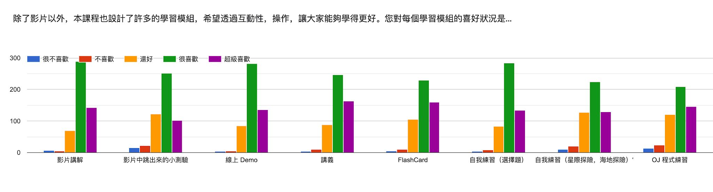
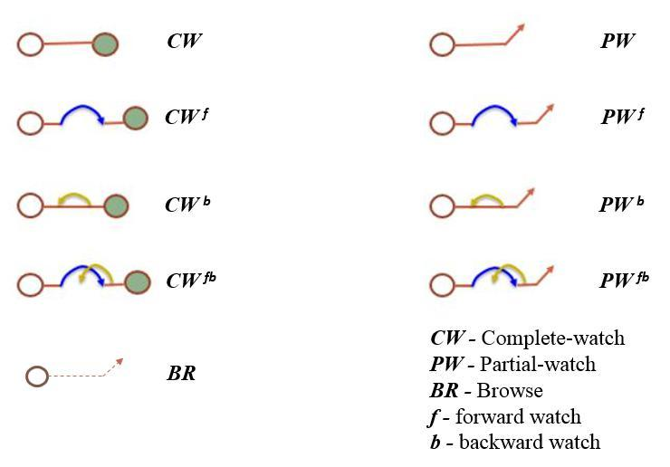
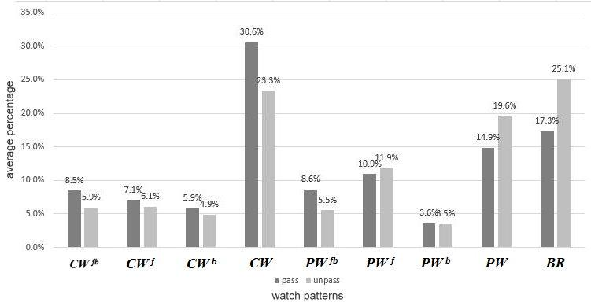
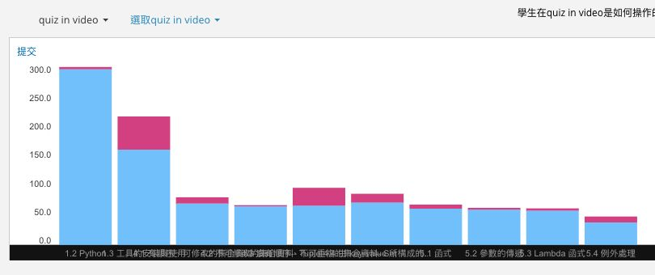
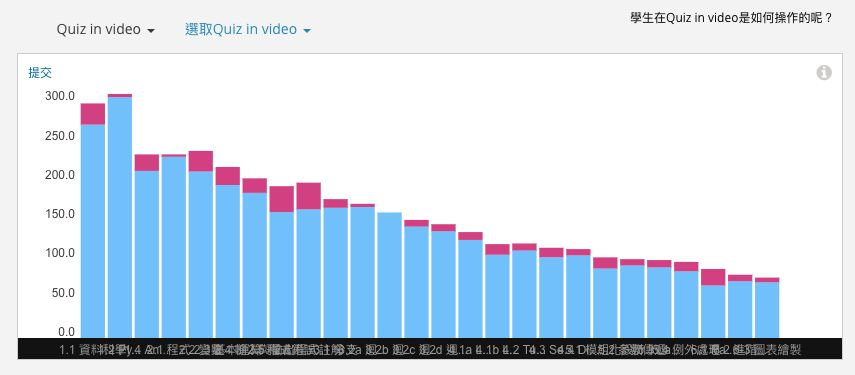
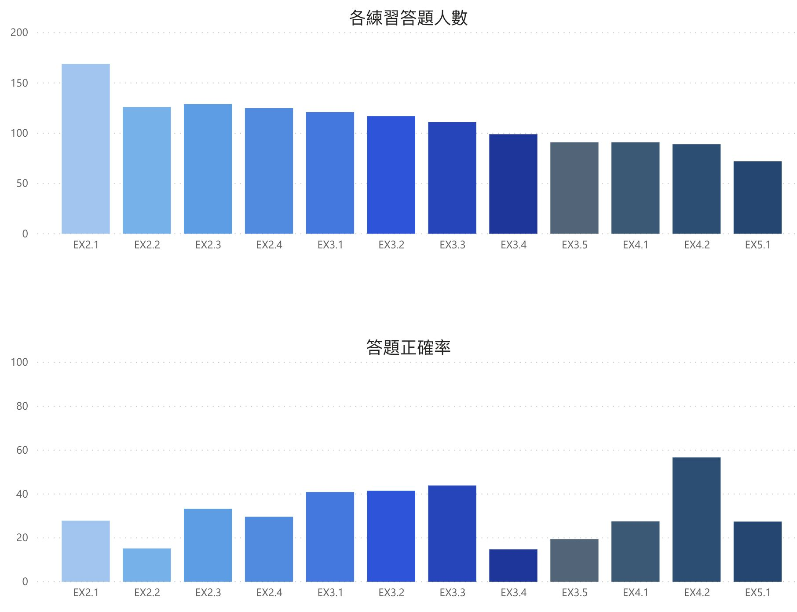
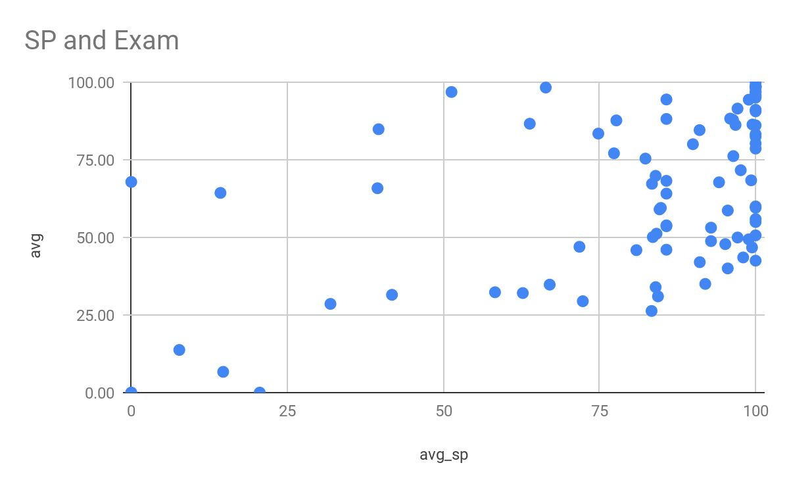
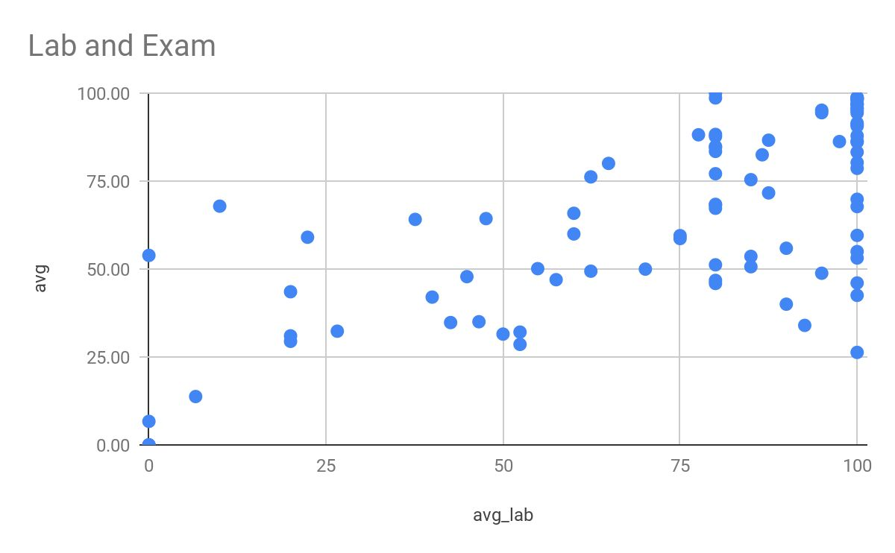
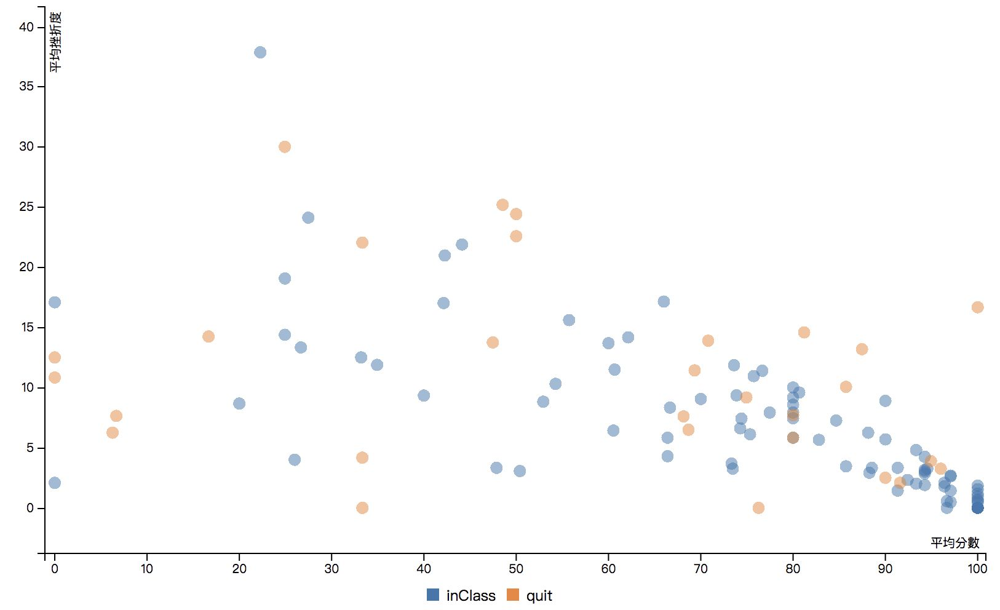

Previous slide Next slide Toggle fullscreen Toggle overview view Open presenter view
程式教育的線上學習與其歷程分析 · 國立高雄師範大學特邀演講（2022/12/08） 章節導覽 ▾
國立高雄師範大學 · 特邀專題演講（2022/12/08）
程式教育的線上學習與其歷程分析
從疫情驅動的 MOOC 數位轉型、多元互動組件與 Online Judge 實踐，到基於 OpenEdu 學習歷程日誌之影片預警、參與度與挫折行為分析
講者： 薛念林 教授（Prof. Nien-Lin Hsueh）單位： 逢甲大學 資訊工程學系時間與地點： 2022 年 12 月 8 日（四）10:00 · 國立高雄師範大學
薛念林教授（Nien-Lin Hsueh）· 逢甲大學資訊工程學系 · 高師大特邀演講 2022/12/08
程式教育的線上學習與其歷程分析 · 國立高雄師範大學特邀演講（2022/12/08） 章節導覽 ▾
演講大綱目錄（點擊各項目直接跳轉）
薛念林教授（Nien-Lin Hsueh）· 逢甲大學資訊工程學系 · 高師大特邀演講 2022/12/08
程式教育的線上學習與其歷程分析 · 國立高雄師範大學特邀演講（2022/12/08） 章節導覽 ▾
時代背景：Learn At Home 與線上學習的全面試驗
根據聯合國（UN）統計，COVID-19 疫情期間 13 個國家停課衝擊全球約 2.9 億名學生 （Learn From Home, LFH），揭露線上教育四大基礎瓶頸：
並非所有地區皆具備穩定且可靠的寬頻網路連線。
並非所有學校都擁有數位教學所需軟硬體與即時技術支援。
極少數學校具備足夠教師能量，能產製設計精良的線上教材。
並非所有學生家庭皆具備線上學習所需之電腦硬體或軟體環境。
核心反思： 不管你喜不喜歡，這場疫情迫使全體師生進入一場史無前例的大型試驗，也正好讓我們系統性地驗證線上程式教育的可能性與極限 。
薛念林教授（Nien-Lin Hsueh）· 逢甲大學資訊工程學系 · 高師大特邀演講 2022/12/08
程式教育的線上學習與其歷程分析 · 國立高雄師範大學特邀演講（2022/12/08） 章節導覽 ▾
MOOC 之旅：課程型態四階段演進
清楚的聲音與畫面 （音質比特效更關鍵）且提早檢查。不要想錄下所有內容 ：保持短小精悍、多樣拍攝風格。預想隨堂測驗 ：拍攝腳本階段即規劃互動停頓點。
1-(3-1)3-4-1）
13 週線上非同步 ＋5 次關鍵實體面授 ：
課程說明與軟體安裝操作；2–3. 討論與兩次複習考；
討論與專題計畫書；5. 期末專題報告與討論。
薛念林教授（Nien-Lin Hsueh）· 逢甲大學資訊工程學系 · 高師大特邀演講 2022/12/08
程式教育的線上學習與其歷程分析 · 國立高雄師範大學特邀演講（2022/12/08） 章節導覽 ▾
MOOC 課程設計：六大單元與單一單元標準節奏
課前起點 ：修課須知、環境準備、課前問卷。六大核心單元 ：
單元一：Python 程式與資料科學簡介
單元二：程式基本結構與變數運算
單元三：邏輯控制（循序、分支、迴圈）
單元四～六：函式、資料結構與資料分析實作
收尾檢核 ：期末實作專題、課程問卷、取得修課證書 。
每週單元皆採標準化鷹架流程，降低初學者迷失感：
Introduction ：單元動機與生活情境導入Concept × 3 ：拆分為 3 段精簡核心概念短影片Application ：真實問題應用示範Online Judge ：立即動手撰寫程式並取得自動回饋Solution & Test ：解題思維剖析與單元總測驗
設計理念： 線上課程最忌諱「將三小時實體錄影直接上架」；必須將知識拆解為可消化之微單元，並把練習與評量內嵌於每一單元的閉環 之中。
薛念林教授（Nien-Lin Hsueh）· 逢甲大學資訊工程學系 · 高師大特邀演講 2022/12/08
程式教育的線上學習與其歷程分析 · 國立高雄師範大學特邀演講（2022/12/08） 章節導覽 ▾
不只是影片：多元學習組件與學生偏好調查
線上學習絕不能只靠單向看影片；課程整合 9 大互動組件 ，讓學生透過多元感官持續參與：
聽講影片 Quiz in Video 電子講義 模擬與實驗 自我練習 記憶卡 Flashcard 線上討論（Teams/Line） 即時回饋 OJ 線上程設
同樣是測驗，「自我練習」喜好度高於「隨堂測驗」 （無計分壓力更能安心試錯）。
OJ 程式練習呈現兩極化 ：整體較具挑戰而略不討喜，但「非常喜歡」的人數比例亦極高 ！

OpenEdu 修課生對各學習組件喜好程度實證調查（懸停可放大檢視）
薛念林教授（Nien-Lin Hsueh）· 逢甲大學資訊工程學系 · 高師大特邀演講 2022/12/08
程式教育的線上學習與其歷程分析 · 國立高雄師範大學特邀演講（2022/12/08） 章節導覽 ▾
評量核心：Online Judge 虛擬助教與期末實作專題
封閉性測驗 ：設定合適作答次數，提供即時答題回饋 。OJ 線上程式評測（虛擬助教） ：
流程：學生程式 ➔ 雲端執行環境＋測試資料 ➔ 即時回傳得分與狀態。
結合星際探險（Star Trek） 等趣味化關卡設計，降低初學者面對語法錯誤的畏懼感。
學生運用所學 Python 分析開放資料，解決生活真實問題：
民生交通 ：台北／新北 YouBike 分析、停車場剩餘車位、台中市交通事故分析、全台郵局分佈。環境健康 ：即時 PM2.5 空氣品質排序、腸病毒就診統計、登革熱年齡分析。金融生活 ：股價自動傳送到 LINE 、購物消費預測、產業薪資分析、以距離推薦旅店。
教學價值： Online Judge 扮演全天候待命的「虛擬助教」，補足線上課程缺乏即時回饋的致命傷；期末開放資料專題則讓程式學習真正連結生活應用。
薛念林教授（Nien-Lin Hsueh）· 逢甲大學資訊工程學系 · 高師大特邀演講 2022/12/08
程式教育的線上學習與其歷程分析 · 國立高雄師範大學特邀演講（2022/12/08） 章節導覽 ▾
如何提升課程參與度（Engagement）與學生回饋
影片精簡聚焦，並於觀看途中適時彈出 Quiz in Video ，有效拉回線上學習專注力。
導入「星際探險」等趣味小遊戲與闖關機制，提升非資訊背景學生的探索動機。
串聯 「聽 ➔ 讀 ➔ 操作 ➔ 模擬」 四種感官體驗，讓學生現學現用、立即驗證理解。
「我學習一般很慢，但影片能讓我重複播放 ，不懂的概念可以重複聽，影片中的小測驗 則可以加深印象！」
「自我練習 & OJ 練習 讓我學完後立刻可以測試到底了解了沒，真的很棒！」
「非常喜歡星際探險 的部分，利用遊戲化互動讓我更有興趣去學 Python！」
薛念林教授（Nien-Lin Hsueh）· 逢甲大學資訊工程學系 · 高師大特邀演講 2022/12/08
程式教育的線上學習與其歷程分析 · 國立高雄師範大學特邀演講（2022/12/08） 章節導覽 ▾
學習資料分析：More than Dashboard
平台全程記錄超過 20 大類互動事件，涵蓋：
選課（Enrollment）、頁面導覽（Navigational）
影片互動（17 種事件） ：load_video、play_video、pause_video、seek_video、speed_change_video、stop_video題目互動（16 種事件） ：problem_check、showanswer
身分與課程 ：user_id、course_id、session時間軸 ：time（事件時間戳）、currentTime（影片秒數）行為細節 ：old_time / new_time（快轉／倒帶區間）、old_speed / new_speed（倍速變化）、event_type
薛念林教授（Nien-Lin Hsueh）· 逢甲大學資訊工程學系 · 高師大特邀演講 2022/12/08
程式教育的線上學習與其歷程分析 · 國立高雄師範大學特邀演講（2022/12/08） 章節導覽 ▾
案例一（上）：影片觀看行為與 9 種觀看模式
研究問題 ：能否僅憑學生在課程初期觀看前 3 支影片的行為 ，即提早預測其最終是否及格（Pass / Fail）？
由 play / pause / seek / stop 日誌萃取：
Complete-watch (CW) ：幾乎完整看完影片Partial-watch (PW) ：未看完即提前離開Forward watch (f) ：觀看過程中包含向前快轉Backward watch (b) ：觀看過程中包含向後倒帶重看
單一課程 （MOM）vs. 180 門跨領域課程 教師引導進度（Instructor-paced） vs. 自主學習（Self-paced）

由完整度與快轉／倒帶組合定義之 9 種影片觀看模式（懸停可放大）
薛念林教授（Nien-Lin Hsueh）· 逢甲大學資訊工程學系 · 高師大特邀演講 2022/12/08
程式教育的線上學習與其歷程分析 · 國立高雄師範大學特邀演講（2022/12/08） 章節導覽 ▾
案例一（下）：觀看模式分布與機器學習預測成效
採用 SVM、Neural Network、Random Forest 並進行 10-fold Cross-Validation ，其中 Random Forest 表現最佳：

Pass vs. Fail 學生於各觀看模式之比例分布差異
實驗設定（Random Forest · 10-fold CV）
Accuracy
Precision
Recall
F1
Single Course（單一課程 MOM） 0.83 0.89 0.89
0.89
180 Different Courses（跨課程泛化） 0.71
0.70
0.95 0.81
Instructor-paced（教師引導進度） 0.71
0.71
0.96 0.82
Self-paced（自主學習課程） 0.91 0.93 0.976 0.95
關鍵發現： 即使跨 180 門不同課程，模型對高風險不及格學生的 Recall 高達 95%–97.6% ；在自主學習（Self-paced）課程中準確率更達 91%（F1 = 0.95） ，極具早期介入預警價值！
薛念林教授（Nien-Lin Hsueh）· 逢甲大學資訊工程學系 · 高師大特邀演講 2022/12/08
程式教育的線上學習與其歷程分析 · 國立高雄師範大學特邀演講（2022/12/08） 章節導覽 ▾
案例二（上）：互動性教學模組與課程活動力留存
比較不同互動設計程度之學期課程與模組，追蹤學生至第 5 週的參與活動力留存率 ：

互動較少課程（M2019s）活動力快速衰退至 17%

互動較高課程（M2019f）活動力穩定維持 32%

Online Judge 程式實作模組活動力最高達 40%
重要觀察： M2019f 因加入較多互動元素（如星際探險活動力達 30% ），第 5 週整體留存率約為低互動班的 2 倍 ；Online Judge 雖初期參與人數較少，但一旦投入，其留存活動力高達 40% ，高於所有其他模組！
薛念林教授（Nien-Lin Hsueh）· 逢甲大學資訊工程學系 · 高師大特邀演講 2022/12/08
程式教育的線上學習與其歷程分析 · 國立高雄師範大學特邀演講（2022/12/08） 章節導覽 ▾
案例二（中）：程式除錯軌跡與成績關聯分析（SP vs. OJ）
分析學生提交紀錄（F1072）探討「遇到什麼問題、如何除錯」，並比較 自我練習（SP） 與 程式實作（OJ） 對期末考成績之預測力：

自我練習（SP）vs. 期末考：CORR = 0.54

線上程式（OJ）vs. 期末考：CORR = 0.70
實證觀察： ① SP（選擇題） 因允許無限次反覆作答，高分不必然保證考試高分（r = 0.54）；OJ 實作得分 與考試成績呈更強正相關（r = 0.70）。② 除錯軌跡顯示初學者常混淆變數、字串串接、引號與 input()，且易陷入盲目修改程式碼（blind debugging） 的壞習慣！
薛念林教授（Nien-Lin Hsueh）· 逢甲大學資訊工程學系 · 高師大特邀演講 2022/12/08
程式教育的線上學習與其歷程分析 · 國立高雄師範大學特邀演講（2022/12/08） 章節導覽 ▾
案例二（下）：挫折度分析（Frustration, Grade & Dropout）
若學生反覆提交仍不斷失敗（例如第一題簡單 OJ 即有學生提交 32 次仍失敗 ），將累積高度挫折並引發退選風險：

挫折度（Frustration Degree）與成績呈現顯著負相關
分組比較指標
高挫折／低成績組
低挫折／高成績組
依挫折度分組（平均成績） 49.29 分80.1 分
依挫折度分組（退選率 Dropout） 34%12%
依 Lab 成績分組（平均 Lab 成績） 57 分74 分
依 Lab 成績分組（平均挫折度 F） 11.16.7
教學預警意義： 挫折率較高的學生，退選率高出近 3 倍（34% vs. 12%） 且成績明顯偏低；即時偵測「誰卡關、何時需要幫助（Who / When need help?）」是降低退選率的關鍵！
薛念林教授（Nien-Lin Hsueh）· 逢甲大學資訊工程學系 · 高師大特邀演講 2022/12/08
程式教育的線上學習與其歷程分析 · 國立高雄師範大學特邀演講（2022/12/08） 章節導覽 ▾
結語與教學啟示（Lessons Learned）
📖 1. Textbook is Necessary
🤝 2. Improve Learning Support
🎯 3. Precise Learning
延伸研究成果：
21Judge（UTAUT2）↗ ·
22Engagement（PLS-SEM）↗ ·
2026 高師大演講（AI & Education）↗
薛念林教授（Nien-Lin Hsueh）· 逢甲大學資訊工程學系 · 高師大特邀演講 2022/12/08
本場特邀演講於 2022 年 12 月 8 日於國立高雄師範大學發表，系統性回顧逢甲大學資訊工程學系推動 Python 程式設計線上化與 MOOCs 課程的多年實戰經驗，以及後續利用 OpenEdu 平台學習日誌（Log Data）進行教育資料探勘（EDM）之實證成果。簡報內容涵蓋兩大主軸：前半部探討「MOOC 之旅與教學設計」（從實體翻轉至全線上非同步課程與多元互動元件）；後半部展示「學習歷程資料分析」（包含影片觀看行為預測及格率、互動模組留存活動力、SP 與 OJ 成績關聯、以及提交挫折度與退選率分析）。
本頁為全場演講之四維度互動目錄，支援現場點擊直接跳轉至對應章節。整體脈絡由教學實務出發（第 3–8 頁：線上課程怎麼設計才能「不只是影片」），進階到資料驅動的實證研究（第 9–14 頁：如何從 OpenEdu 龐大的細粒度事件日誌中提煉出可行動的教學洞察與早期預警模型），最後於第 15 頁收斂為精準學習（Precise Learning）的實踐原則。相關延伸閱讀論文亦收錄於本倉儲之 MyResearch/21Judge（UTAUT2 接受度）與 MyResearch/22Engagement（PLS-SEM 行為投入模型）。
本頁呈現 2020–2022 年全球疫情停課（Learn At Home / LFH）對高等教育的衝擊。聯合國報告指出近三億名學生被迫轉向遠距學習，暴露出網路基礎建設、學校技術支援、教師線上教材設計能量與家庭終端設備等四大結構性落差。這場非自願的全面實驗成為逢甲團隊加速推動程式設計課程 MOOC 化、自動化評測與學習歷程資料分析的關鍵轉折點。
本頁展示課程從傳統實體面授漸進演變為全線上 MOOCs 的四個階段：（1）傳統實體課程；（2）線上預習翻轉，結合精簡錄製影片與 Trinket 局部線上程式碼練習；（3）13-5 非同步混成模式（13 週線上搭配 5 次實體聚會，週次結構採 1-(3-1)3-4-1 節奏），並導入 Coding Corner 自動評量系統以減輕助教負擔；（4）全線上 OpenEdu MOOCs 課程，透過清楚的修課須知與每週 Email 主動提醒維繫學習動機。
本頁解析 OpenEdu 線上 Python 課程的雙層設計架構。在宏觀層次上，從課前修課須知到六大循序漸進單元，最終銜接期末實作專題與證書認證；在微觀層次上，每一單元固定遵循「導入（Introduction）➔ 核心概念短片（Concept ×3）➔ 應用（Application）➔ 線上程式評測（Online Judge）➔ 解析（Solution）➔ 單元測驗（Test）」的標準化節奏，確保學生每學完一個概念即能立即驗證吸收成效。
本頁回應「二、不只是影片」的核心命題。除了傳統聽講影片與電子講義外，課程設計了影片中彈出隨堂測驗（Quiz in video）、視覺化程式執行模擬、記憶卡（Flashcard）、跨平台社群討論（Teams、Line、Slack、FB）以及 Online Judge 實作題。問卷調查顯示兩個重要教學啟示：（1）學生偏好低壓力的自我練習勝過計分隨堂測驗；（2）OJ 程式題雖因門檻高而出現兩極反應，卻同時擁有極高比例的「非常喜歡」族群，展現真實寫程式帶來的高度成就感。
本頁介紹線上程式課程的評量設計與專題成果。自動評測系統（Online Judge）讓學生提交程式碼後能於數秒內獲得編譯結果與測試資料通過狀態，大幅縮短學習回饋迴圈，並搭配星際探險等趣味化主題提高挑戰意願。期末專題則鼓勵跨科系學生選取政府開放資料（如 YouBike、PM2.5、郵局分佈、登革熱、交通事故）或實作股價自動推播至 LINE 等應用，展現從基礎語法邁向資料科學實作的完整學習成果。
本頁總結提升線上課程參與度（Engagement）的三大支柱：精簡且含互動測驗的影片、遊戲化機制，以及涵蓋「聽、讀、操作、模擬」的多元互動循環。下方精選自 OpenEdu 課後問卷之學生真實回饋，印證了自主調整觀看節奏、影片內嵌測驗、OJ 即時驗證與星際探險遊戲化設計對不同學習速度學生的實質幫助（後續亦發展為 JITE 2022 之 PLS-SEM 行為投入實證論文）。
本頁切入演講下半場核心主題「學習歷程資料分析」。除了提供教師零門檻檢視的 Dashboard 外，OpenEdu 更進一步開放「去識別化表格資料（適合 Excel 統計）」與「去識別化 JSON 原始日誌（適合程式探勘與機器學習）」。細粒度 JSON 事件完整捕捉了學生每一次播放、暫停、快轉、倒帶、調速與答題行為，為後續兩大實證分析案例奠定資料基礎。
案例一探討如何透過早期影片觀看日誌建構退選／不及格預警模型。研究將原始 JSON 事件經三層前處理（Course/Student ➔ Watching Patterns ➔ Feature Vector），依據「完整看完／部分觀看」與「無跳轉／快轉／倒帶／雙向跳轉」等組合定義出 9 種觀看模式（Watching Patterns），並針對每一組 `<student, course>` 計算各模式佔比作為機器學習特徵向量，目標僅用前 3 支影片的行為即預測最終通過與否。
本頁呈現案例一之實證比較結果。左側圖表顯示及格（Pass）與不及格（Fail）學生在 9 種影片觀看模式上的顯著分布差異；右側表格彙整 Random Forest 經十折交叉驗證的效能指標：在單一課程 MOM 準確率達 0.83（F1 = 0.89），跨 180 門異質課程仍維持 0.95 的高召回率（能精準抓出絕大多數潛在不及格學生），而在最需要自律的 Self-paced 課程上更達到 0.91 準確率與 0.95 F1 分數。
案例二聚焦互動式教學模組對學生長期參與活動力的實證影響。比較兩學期開課數據發現：互動元素較少的班級（M2019s）參與度迅速滑落至 15%–17%，而強化互動與星際探險（30%）等元素的班級（M2019f）能穩定維持 30%–32% 活動力。更具啟發性的是，門檻較高的 Online Judge 模組雖然初期起跳人數較少，但持續參與者的留存活動力高達 40%，顯示高挑戰度搭配即時回饋能有效深化學習黏著度。
本頁結合質性提交軌跡分析與量化成績相關性分析。在質性面上，追蹤學生連續提交的程式碼版本，發現初學者最常卡關在變數型別、字串串接與引號、以及 input 函式使用，且缺乏系統性除錯思維而反覆盲目試誤。在量化面上，比較概念核對選擇題（Self-Practice, SP）與動手實作題（Online Judge, OJ）對期末考（Exam）的相關係數，結果顯示 OJ（r = 0.70）顯著高於 SP（r = 0.54），證實唯有真實動手寫程式才能有效轉化為評量實力。
本頁探討程式學習歷程中的「挫折度分析（Frustration Analysis）」。研究將學生在 OJ 系統上反覆提交失敗的頻率量化為挫折指標（F），實證數據清楚呈現雙向印證：（1）以挫折度分組時，高挫折組平均成績僅 49.29 分、退選率高達 34%，遠劣於低挫折組的 80.1 分與 12% 退選率；（2）反向以實作（Lab）成績分組時，高分組平均挫折度（6.7）亦遠低於低分組（11.1）。此發現直接催生了團隊後續「即時偵測卡關與分層 AI 助教介入」的研究方向。
本頁總結 2022 年高師大演講的三大實務啟示：（1）即便在高度互動的 MOOCs 時代，結構化的教科書與講義（Textbook）依然不可或缺，提供學生系統性查閱與回顧的基礎；（2）透過自動評測、遊戲化與挫折偵測持續改善學習支持與教學介入；（3）以學習歷程分析為基礎，朝向「精準學習（Precise Learning）」演進。底部同時提供連結，方便讀者直接銜接團隊後續之實證論文簡報與 2026 年高師大 AI 時代演講。